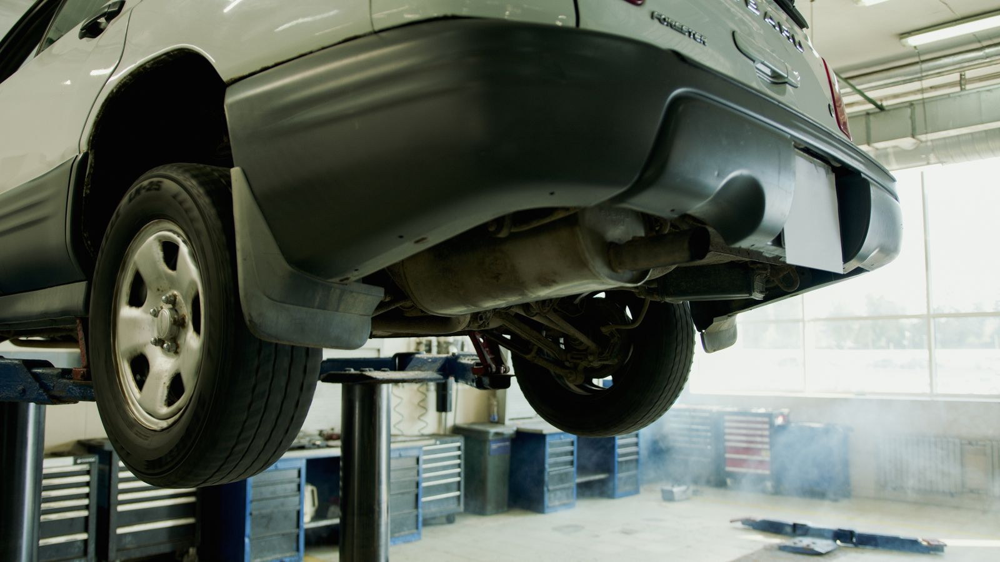
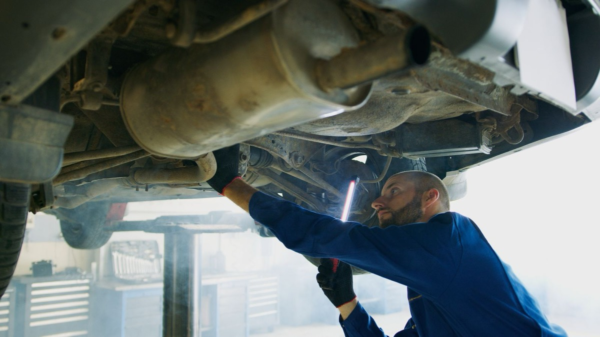

Exhaust Flapper Valve: What It Does and How to Stop the Rattle
The exhaust flapper valve is a spring-loaded flap inside the tailpipe section that closes at low engine load to quiet the exhaust, and opens under load to let gases through. It is a noise-control device, not a muffler, and it is the source of the chirp, squeak and rattle that a lot of 2014–2017 Silv
The rattle is a valve, not a broken exhaust. The passive exhaust valve opens and closes with exhaust pressure, and the chirp or buzz at the tailpipe comes from the flap moving — which is why replacing the whole system is the wrong first move.
It is the cheapest fix on this entire site: the part that stops the noise costs about ten dollars and the modification some owners do instead costs nothing at all.

The exhaust flapper valve is a spring-loaded flap inside the tailpipe section that closes at low engine load to quiet the exhaust, and opens under load to let gases through. It is a noise-control device, not a muffler, and it is the source of the chirp, squeak and rattle that a lot of 2014–2017 Silverado, Tahoe and Suburban owners hear from the rear of the truck.
The confusion around it comes from the fact that it fails in two different ways. A worn flap can chirp on light throttle or rattle at idle, and those sound like unrelated problems until you know they are the same part.
What the valve is actually doing there
GM calls it a passive exhaust valve, and the “passive” part is the point. There is no motor, no actuator and no wiring. Exhaust gas pressure pushes the flap open. A spring pushes it closed. That is the entire mechanism.
It exists because of cylinder deactivation. Trucks with Active Fuel Management shut down half their cylinders under light load, and a V4 exhaust note is both different in pitch and prone to a low-frequency boom inside the cab. The flapper closes down the exhaust path in that condition, which changes the tone and reduces the body-pressure booming that owners describe as a throbbing in the ears. It is not there for performance. It is there to make a cylinder-deactivated V8 acceptable at cruise.

What GM’s own bulletin says
This is documented, not folklore. Bulletin PIT5404E, dated 11/20/2020, is titled:
“Squeak Chirp Whistle Rattle Type Noise From Rear Of Vehicle (Passive Exhaust Valve) Or Buffeting Vibration Drone Exhaust Tone Change Body Pressure Booming (Afm Exhaust)”
It applies to 2014–2017 Silverado 1500, 2015–2017 Suburban and 2015–2017 Tahoe. The summary instructs the technician to diagnose and repair the buffeting, vibration, drone, exhaust tone change or body-pressure booming found during inspection, and states that for vehicles with the 4.3L or 5.3L engine, an updated exhaust system is available.
Two things follow from that wording. First, GM treats the noise as a real defect with a defined repair path, not as a characteristic of the truck. Second, the repair GM lists is a system replacement, not a valve replacement. Owners who have been through it report the dealership replacing the entire exhaust assembly, which matches.
Why it chirps, and why it rattles
Two failure modes, and they happen in different generations of the part.
The chirp happens when the flap moves. Owners describe it as a tin-can squeak or a short chirp at the moment the engine transitions between V8 and V4. The valve is cycling constantly in light-load driving, so any wear or corrosion on the pivot is worked back and forth until it makes noise. One owner on GM-Trucks.com reported that holding the transmission in a manual gear range, which prevents the V4 transition, made the squeak stop entirely during a test drive. That is a useful diagnostic because it isolates the valve without touching anything.
The rattle happens when the flap is loose. GM revised the design, moving the flapper from behind the muffler to in front of it and changing the valve itself. The revised part does not chirp the way the early one did, but it can develop a rattle at idle as the pivot wears. A 2016 5.3 owner on the same thread described being on his third factory exhaust, with the newest design rattling loudly at idle after about six months, and noted that the noise stopped the moment he put his hand on the valve. That hand test is the whole diagnosis: if pressing the flap silences it, the flap is the source.
The free fix, and what it actually changes
The cheap fix circulates widely because it costs nothing. You reach the valve, rotate it to the open position, and clamp it there so it cannot close again. Owners on the Silverado/Sierra forums describe turning the valve counter-clockwise and clamping it in place, and report the chirp disappearing completely afterwards.
What that does is hold the exhaust path open all the time. You are not removing anything. The flap stays where it is, parked open, and the spring no longer has anything to fight. It is reversible in about two minutes if you keep the clamp off later.
What it changes is sound. With the flap held open, the truck sounds the way it does under load at every throttle position, including the cylinder-deactivated cruise where the valve was doing its quieting work. Owners who have done it describe the tone as slightly deeper. The trade is that the specific thing the valve was installed to suppress, the V4 exhaust note and the low-frequency boom, is no longer suppressed.
That is the honest trade-off, and it is why some owners clamp it and others replace the system.
The other route: replacing the whole rear section
The permanent fix is to remove the valve from the exhaust path entirely, which in practice means replacing the section of pipe it lives in. A shop cuts the valve out and welds in straight pipe. This is what several owners mean when they say they “had the flapper removed,” and it is a fabricated repair, not a part you order.
Worth knowing before you schedule it: no flapper-delete kit is sold on the truck parts listings this guide checked. A search for “exhaust flapper valve” on the AmericanTrucks Silverado catalog returned 14 items on 16 November 2026, and not one of them is a flapper delete. The results were EGR valves (from $99.99) and exhaust cutout valves, which are a different device that does a different job.
So the price of a cut-and-weld is a shop quote, not a catalog number. Ask for a straight-pipe replacement of the valve section, ask whether they will reuse the factory hangers, and get the number before they start.
If you want the valve behaviour but not the factory part
There is a middle option that is an actual product: a valved exhaust where you control the flap. XForce sells a Varex valved cat-back for the 2019–2026 5.3L Crew Cab with the 5.80-foot box at $1,255.50, rated Moderate on the site’s loudness scale. That is a full system, not a repair, and it is the route to take if what bothers you is the factory valve specifically rather than the sound of the truck.
At the small end, an electronic cutout kit lets you open a bypass under the truck on demand. The XForce Electronic Exhaust Control Valve Cutout Kit is $180.00 in 2.50-inch and 3-inch, and $202.50 in 3.50-inch and 4-inch, all with 21 reviews as of 16 November 2026.
| Option | Cost | What it involves | Reversible |
|---|---|---|---|
| Clamp the flap open | No parts cost | Reach the valve, rotate open, clamp | Yes, remove the clamp |
| Cut the valve out and weld pipe in | Shop quote | Fabricated repair, no kit sold | No |
| Electronic cutout kit | From $180.00 | Weld-in bypass valve plus wiring | Partly |
| Valved cat-back system | $1,255.50 (XForce Varex, 19–26 5.3L) | Full rear system replacement | Yes, keep the factory parts |
See the XForce Varex valved system → $1,255.50, Moderate loudness, checked 16 Nov 2026
Does any of this affect emissions or inspection?
The flapper valve is a noise device. It sits downstream of the catalytic converters and has no role in emissions control, so clamping it open does not change what comes out of the tailpipe. What it can change is measured sound level, which is a state-law question.
If you are in a state with a noise statute, the test is the level your truck produces, not which parts are on it. California’s rule, in Cal. Veh. Code § 27151, prohibits modifying an exhaust in a way that increases noise beyond the limit for the vehicle type, and sets a 95 dB(A) safe harbor for vehicles under 6,000 pounds GVWR, with “nonoriginal exhaust equipment” counting as part of the system. Cutting the valve out goes further than clamping because it removes a factory component, and a state inspector looking at a modified exhaust is a separate conversation from the federal tampering provision in 42 U.S.C. § 7522, which is about emissions devices — and this is not one.
Which way to go
Clamp it open if the noise is the problem and you can live with a slightly louder, boomier cruise. It is free, it is reversible, and it directly addresses a flap that is cycling and wearing.
Have it cut out if the rattle persists and you want it gone permanently. Get a quote first, keep the removed section, and know that this one does not reverse.
Replace the rear section if you were going to change the exhaust sound anyway. Spending a shop’s labour on a cut-and-weld when a valved system is $1,255.50 makes sense only if you like the factory tone otherwise.
Do nothing if the noise only shows up in a narrow condition you rarely drive in. The TSB exists because the noise is a defect, but a valve that rattles at idle and is silent at speed is not a safety problem. It is an annoyance with a free fix, and that is the reason so many owners never bother with the permanent one.
Frequently asked questions
What does the exhaust flapper valve do?
It is a spring-loaded flap in the tailpipe section that closes under light load to quiet the exhaust when Active Fuel Management shuts down half the cylinders. Exhaust pressure opens it; a spring closes it. There is no motor or wiring.
Why does my Silverado chirp when it goes into V4?
The flap is moving on a worn or corroded pivot. Holding a manual gear range to keep the engine out of V4 mode makes the noise stop, which confirms the valve as the source. GM documents this in bulletin PIT5404E.
Can I just clamp the flapper open?
Yes, and owners commonly do. Rotate the valve to the open position and clamp it so it cannot close. The noise stops, the exhaust note gets slightly deeper, and the fix is removable.
Is there a flapper delete kit I can buy?
Not on the truck catalogs checked for this guide. A search for “exhaust flapper valve” on the AmericanTrucks Silverado listing returned 14 items on 16 November 2026 and none of them was a flapper delete. Removing the valve is a cut-and-weld job.
Does holding the flapper open hurt the engine or emissions?
It does not touch the catalytic converters and has no effect on what the engine produces. It changes the exhaust note at cruise, which is a state noise-law question rather than an emissions one.
What did GM change on the revised valve?
GM moved the flapper from behind the muffler to in front of it and changed the valve itself. The revised design does not produce the V4 chirp, though owners report it can still develop a rattle at idle as it wears.
Sources
Bulletin PIT5404E, “Squeak Chirp Whistle Rattle Type Noise From Rear Of Vehicle (Passive Exhaust Valve) Or Buffeting Vibration Drone Exhaust Tone Change Body Pressure Booming (Afm Exhaust)”, dated 11/20/2020, covering 2014–2017 Silverado 1500, 2015–2017 Suburban and 2015–2017 Tahoe. Title, date, models and summary read on tsbsearch.com/Chevrolet/PIT5404E on 16 November 2026.
Owner reports from the GM-Trucks.com thread “Exhaust Flapper Rattle - Again” and the Silverado/Sierra forum thread “How to clamp open my exhaust flapper valve?”, both read on 16 November 2026.
Prices, review counts, fitment and loudness ratings read from the live AmericanTrucks 2019–2026 Silverado 1500 listings on 16 November 2026. The “exhaust flapper valve” search returned 14 items; the “exhaust cutout valve” search returned 81.
Statutory text from 42 U.S.C. § 7522 and Cal. Veh. Code § 27151, read on 16 November 2026.
Topics
- Exhaust
- Silverado 1500
- 5.3L
- 4.3L